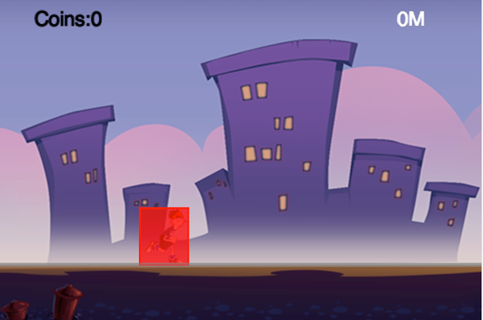
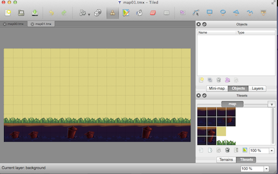
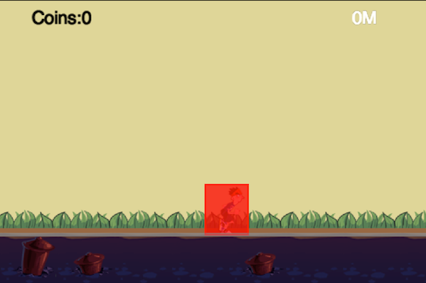

Explorer with TiledMap and Camera
Introduction
In this tutorial, I will show you how to add TiledMap to the parkour game as the new background.
We will also learn how to make the background to scroll infinitely and the player to run infinitely.
The magic behind these is all about moving the cocos2d camera.
Do Some Preparation Stuff
Before we get our hands dirty, let's add the resource files and the corresponding names to our game.
Setup Resource and Globals
Since we will need to refer to other layers within each layers. So the best way to retrieve the layer is via tag.
Add the following code into globals.js:
if(typeof TagOfLayer == "undefined") {
var TagOfLayer = {};
TagOfLayer.background = 0;
TagOfLayer.Animation = 1;
TagOfLayer.Status = 2;
};
Here we give background layer, animation layer and status layer a tag name, thus we can retrieve other layer by tag.
We also need add the resource variables in resource.js:
//Our two tiled map are named s_map00 and s_map01.
var s_map = "map.png";
var s_map00 = "map00.tmx";
var s_map01 = "map01.tmx";
var g_resources = [
//image
//There are a lot of image defined here, we just omit it for clarifying.
{src:s_map},
{src:s_map00},
{src:s_map01}
];
The above code is self-explanation so let's go to the next section.
Enable Chipmunk Debug Drawing
If we are doing Chipmunk physics, you'd better to enable debug drawing. So the debug process will be more handy.
Add the following code into AnimationLayer.js 's ctor function:
this._debugNode = cc.PhysicsDebugNode.create(this.space);
// Parallax ratio and offset
this.addChild(this._debugNode, 10);
When you run the game again, you will see a red box above the running player:

Introduction to TiledMap
TiledMap is a very common used concepts in 2d games. It is useful for building large level map and some parallax scrolling background.
TiledMap consumes less memory than normal PNG file. If you want to build some huge level map, it is definitely your right choice.
Without further ado, let's dive into the TiledMap.
Design and Make the TiledMap Background
At first, you should download TiledMap. You can download it from here. Since TiledMap is a cross platform software.
There are many different kinds of version available. You can choose a version according to your operating system. After downloading the Tiled editor, you should be familiar with it's usage. You may want to take a look at it's documentation.
When you feel comfortable with Tiled, you can design your tiled map with the tilesets we provided.
The detail process of making the two tiled map is out of scope of this tutorial.
(Note: If you can't make the tiled map by yourself, you can safely skip the process and use the tiled map provided by us.)

Replace Previous Background with TiledMap
Now, it's time to replace the old static background image with our new awesome tiled map.
We will do this in BackgroundLayer.js. At first, we should add four member variables in BackgroundLayer class:
map00:null,
map01:null,
mapWidth:0,
mapIndex:0,
The we should delete the old code we needed to create the static background.
(Note: Here I uncomment the code snippets, you can safely delete all of them.)
// var winSize = cc.Director.getInstance().getWinSize();
//
// var centerPos = cc.p(winSize.width / 2, winSize.height / 2);
// var spriteBG = cc.Sprite.create(s_PlayBG);
// spriteBG.setPosition(centerPos);
// this.addChild(spriteBG);
At last, we will add the new code snippets to create the tiled map background.
this.map00 = cc.TMXTiledMap.create(s_map00);
this.addChild(this.map00);
this.mapWidth = this.map00.getContentSize().width;
this.map01 = cc.TMXTiledMap.create(s_map01);
this.map01.setPosition(cc.p(this.mapWidth, 0));
this.addChild(this.map01);
Save all the changes and run it:

Here, we add two maps. The map01 is right beside the map00 background. In the later section, We will explain why we should add two maps.
Introduction to Camera
Camera seems a little bit complex in 3D graphic programming. But it is very trivial in 2D game. In this section, we won't cover the theory of camera.
Nor do we go deep into the implementation details of moving a node's camera.
We will just show you how to implement the logic of moving a node's camera.
Move the Animation Layer Camera
At first, we need to move the animation layer's camera. So that player and chipmunk rigid body will go with the same speed.
Since the physic body will move right infinitely and the sprite will synchronize it's position with the physic body.
A few seconds later, the player will go outside of the screen, just as it is in the last tutorial.
So we need to move the camera's x position each frame. Here is the code snippets:
getEyeX:function () {
return this.sprite.getPositionX() - g_runnerStartX;
},
update:function (dt) {
var eyeX = this.sprite.getPositionX() - g_runnerStartX;
var camera = this.getCamera();
var eyeZ = cc.Camera.getZEye();
camera.setEye(eyeX, 0, eyeZ);
camera.setCenter(eyeX, 0, 0);
}
Here the getEyeX function computes the delta movement of animation layer's camera. And in update function, in each frame we will modify the node's camera.
You will notice that we have stored the eyeZ variable before we call camera's setEye and setCenter function. One more tips: You should always keep the first argument of setEye and setCenter the same value. Otherwise you will suffer some wired display problems.
In the end, we should call the update method each frame by adding the following code at the end of init method in AnimationLayer.js:
this.scheduleUpdate();
Move the Background Layer Camera
The process to setup the movement of background layer is almost the same as we do in the last section. But we need to do some calculations of the two tiled map.
So let's do it. Add a new member function checkAndReload to BackgroundLayer:
checkAndReload:function (eyeX) {
var newMapIndex = parseInt(eyeX / this.mapWidth);
if (this.mapIndex == newMapIndex) {
return false;
}
if (0 == newMapIndex % 2) {
// change mapSecond
this.map01.setPositionX(this.mapWidth * (newMapIndex + 1));
} else {
// change mapFirst
this.map00.setPositionX(this.mapWidth * (newMapIndex + 1));
}
this.mapIndex = newMapIndex;
return true;
},
When the camera eyeX has exceeded the width of the screen, the expression parseInt(eyeX / this.mapWidth) will get a value greater than 0.
We will use the newMapIndex to decide which map need to move and how many pixels need to move.
Then we should call this function in each frame.
update:function (dt) {
var animationLayer = this.getParent().getChildByTag(TagOfLayer.Animation);
var eyeX = animationLayer.getEyeX();
this.checkAndReload(eyeX);
var camera = this.getCamera();
var eyeZ = cc.Camera.getZEye();
camera.setEye(eyeX, 0, eyeZ);
camera.setCenter(eyeX, 0, 0);
}
At last, we should call scheduleUpdate at the end of background layer's init method:
this.scheduleUpdate();
Wrap it up
Ok. We should do some last ending work.
Modify the onEnter method of PlayScene:
onEnter:function () {
this._super();
this.initPhysics();
this.addChild(new BackgroundLayer(), 0, TagOfLayer.background);
this.addChild(new AnimationLayer(this.space),0, TagOfLayer.Animation );
this.addChild(new StatusLayer(),0, TagOfLayer.Status);
this.scheduleUpdate();
},
Cheers! You have successfully finish this tutorial. Run and take a look at it.
Note: If you don't want to display the debug drawing information of a chipmunk rigid body. You can safely add the following code right after the creation of the PhysicsDebugNode:
this._debugNode.setVisible(false);
Summary
In this tutorial, we have met TiledMap and Cocos2d camera. These two concepts are very important ones when you development a physic endless running game.
You can download the entire project from here.
Where to go from here?
In the next tutorial, we will add coins and obstacles into our game. At that tutorial, we will also learn how to refactor our game code and make it more extensible.
We will also do some cleanup work in PlayScene and encapsulate two class named Coin and Rock.
Keep tuning with the next tutorial and happy coding!